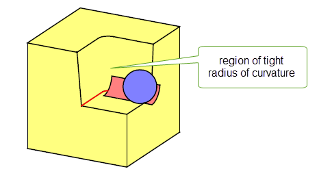

| |
Interpreting Edge Blending Error Codes |
| <<< Three-Face Blending | Chapters | Interpreting Face-Face Blending Error Codes >>> |
This chapter is designed to assist with the interpretation of edge blending error codes. It is difficult to give a complete set of rules which would enable you to correctly apply blends in all circumstances. However, understanding these codes is the key to both correcting illegal blends and getting blends right the first time.
The error codes can be split into three groups:
Severe errors indicate that the edge(s) being checked can never be blended. Severe errors either reflect strict limitations on the blending functionality or cases where Parasolid is unable to classify an error.
Figure 80-1 PK_blend_fault_vertex_c
Figure 80-1 shows an example of a solid with a vertex (highlighted) that is too complex for the proposed blend (shown in blue). A single edge adjacent to this vertex can be blended on its own, as can all of the adjacent edges together provided that they are all non-smooth.
A vertex is generally regarded as too complex to be blended if it has four or more adjacent edges, at least two of which are to be blended. The exception to this is when all of the edges are blended, as mentioned above.
See also Section 75.5, “Limitations on edge blending” and Section 75.6, “Edge blending rules, theories and tips” for further details of limitations to edge blending.
The PK_blend_fault_unknown_c error implies that the blending algorithms cannot classify the error that has been detected. This usually infers that an internal numerical algorithm has unexpectedly failed. However, when this error occurs it may be possible to blend the edge being checked if the blend radius is changed.
Configuration errors report various invalid combinations of blends. It should always be possible to recover from a configuration error by:
The PK_blend_fault_bsurf_c error can occur for either of the following reasons:
Unfortunately these restrictions are difficult both for you to spot and to provide rules of thumb for work rounds. It is sometimes possible to remove the error by reducing the blend radius.
Figure 80-2 PK_blend_fault_range_c
Figure 80-2 shows an example of a solid with unfixed blends of differing sizes on selected edges. This operation would produce the above error because the third edge, edge A, is tangent.
Figure 80-3 PK_blend_fault_edge_c
This error is returned when attempting to create an illegal configuration while blending two out of three edges at a three-edge vertex. This might happen, for example, if the blends are of different convexity, and both blends have a variable-radius. Figure 80-3 illustrates this problem. See Section 75.6.2, “Blending two edges at a three-edge vertex”, for an explanation of which two edge blends you can create at a three-edge vertex.
Figure 80-4 PK_blend_fault_loop_c
Figure 80-4 shows an example of a solid with an unfixed blend that overlaps the edge loop. It can be seen that the range of the blend is so large that the blend extends outside the solid. This blend is not allowed on this edge although it may be possible to blend the edge if the range is reduced to the point where it doesn't overlap the edge loop.
Figure 80-5 PK_blend_fault_overlap_edge_c
Figure 80-5 shows an example of a solid where the unfixed blend overflows unblended edge A since face F cannot be extended to intersect the blend. Though this is not allowed, if the range of the blend was reduced sufficient to ensure that the overlap does not occur it may be possible to fix the blend.
Figure 80-6 PK_blend_fault_face_c
This error can occur when no edge can be found to terminate the boundary curve of a blend, this is either because the radius of the blend is too large or one or more edges adjacent to the edge being checked also needs to be blended ( Figure 80-6).
The error can also occur when attempting to create a rolling-ball blend across a surface that contains a radius of curvature that is smaller than the radius of the blend. In such cases, the rolling ball gets “stuck” at the point where the radius of curvature is smaller than the blend radius.
Figure 80-7 Error when radius of curvature is smaller than blend radius
The error PK_blend_fault_rho_too_large_c can occur when the rho value supplied is too large. This results in the blend cross section curvature being too flat compared to the underlying surface.
Figure 80-8 Blend superimposed on top of original body
Figure 80-9 PK_blend_fault_other_edge_c
Figure 80-9 shows an example of a solid with two unfixed blends on it. Although edge A is legal, it does not check because there is another blend (edge B) on the same face which is not legal causing the checks for overlaps and illegal intersections not to be completed. It may be possible to blend edge A if the blend is removed from edge B. Alternatively it may be possible to blend edge A if edge B is made legal (in this case by blending the adjoining edges).
You may see the fault PK_blend_fault_apex_range_c if you define an apex range chamfer blend with a range large enough that the chord at the requested angle would not hit the opposite surface. Generally, the solution to fixing such blends is to either reduce the range, or turn on appropriate overflow behaviour to allow the blend to fix successfully.
Figure 80-10 shows an example in which a chamfer blend has been defined on the edge shown. The range of the chamfer is such that the blend cannot hit the opposite surface, and so PK_BODY_fix_blends returns the fault PK_blend_fault_apex_range_c..
Figure 80-10 Defining an apex range chamfer blend with a range that is too large
When an edge is blended the blend may have to interact with more than just the two faces which meet at the edge, e.g. if the blend is large it might cover part of one face and run onto a neighboring face. The blend must then be constrained to meet tangentially with this neighboring face.
Figure 80-11 shows two examples where it is possible to blend successfully between non-adjacent faces, also referred to as overlapping blends.
ov_order
,
ov_notch
, and
ov_smooth
options in PK_BODY_fix_blends can let you fix overlapping blends in a single call. See Section 76.3.22, “Fixing overlapping blends”, for more information. Failure to fix overlapping blends in a single call is indicated using any of the following faults:
Figure 80-11 shows several examples over overlapping blends that it might not be possible for Parasolid to fix automatically (depending on the exact configuration and options settings used). Experimenting with options settings or fixing blends independently will allow the blends to be fixed successfully in each case.
Figure 80-11 Examples of overlapping blend failure
Figure 80-12 PK_blend_fault_edge_intsec_c
A typical example of when the above error can occur is shown in Figure 80-12 In this example the unfixed blend overlaps an unblended edge. Reducing the range of the blend, so that it doesn't interfere with the unblended edge, should enable the edge to be blended.
The PK_blend_fault_face_face_c error occurs if the blend has created a face-face inconsistency in the body. The blend is fixed to the body.
This error only occurs if the check for face-face inconsistencies has been specifically turned on while fixing the blend.
The PK_blend_fault_self_int_c error occurs if one or more of the blend surfaces are self-intersecting. The blend is fixed to the body.
This error only occurs if the check for self-intersecting surfaces has been specifically turned on while fixing the blend.
| <<< Three-Face Blending | Chapters | Interpreting Face-Face Blending Error Codes >>> |